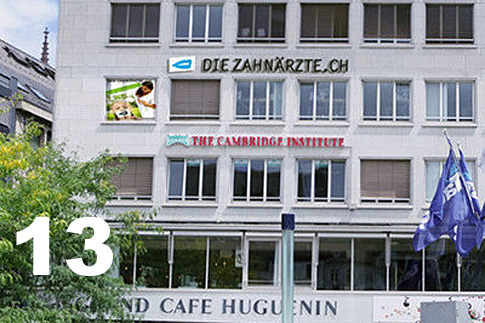

Der älteste Basler

1 Person hat in Basel bislang das Alter von 115 Jahren erreicht.
Weiterführende Infomationen
Tiere in den Langen Erlen

2 Schnatterenten sind seit letztem Jahr im Tierpark Lange Erlen heimisch. Damit erhöht sich die Anzahl Vögel weiter. Waren es vor 10 Jahren noch 271, sind es 2017 fast doppelt so viele. Insgesamt leben im Tierpark Lange Erlen und im Schwarzpark 700 Tiere aus 77 Tierarten.
Weiterführende Infomationen
Tage mit besonderen Witerungserscheinungen
3 Tage mit Hagel wurden im Jahr 2018 bislang an der meteorologischen Messstation St. Margarethen registriert; ein Ereignis, das trotz zahlreicher Hitzetage (31) bzw. Tagen mit Gewitter (36) vergleichsweise selten vorkommt. In den letzten zehn Jahren gab es 5 Jahre ohne Hagel-Ereignisse, je zweimal 1 oder 2 Hageltage und nur ein weiteres Mal 3 Tage mit Hagel. Die Region Basel ist in diesem Schweizer Gewitter-Sommer 2018 mit seinen über 240 000 Blitzen verteilt auf 70 von 92 Tage also von extremen Witerungserscheinungen ziemlich verschont geblieben.
Weiterführende Infomationen
Mehrlingsgeburten
4-linge kamen im Kanton Basel-Stadt zum letzten Mal 1990 auf die Welt. Auch 1993 wurden Vierlinge geboren, allerdings überlebte ein Neugeborenes nicht. Die Anzahl Zwillinge hat in den letzten Jahren allerdings deutlich zugenommen: Waren es 1980 noch 30, wurden letztes Jahr 95 geboren.
Weiterführende Infomationen
Baubewilligungen
5 Baubewilligungen wurden 2017 vom Bauinspektorat für Bettingen erteilt
Weiterführende Infomationen
Frauen an der Universität
6 Frauen waren vor hundert Jahren an der juristischen Fakultät der Uni Basel eingeschrieben. Insgesamt waren 982 Studierende im Wintersemester 1918/1919 in Basel immatrikuliert. Frauen war dies seit 1890 möglich. 2017 studierten 747 Frauen Jura und damit 231 mehr als Männer.
Weiterführende Infomationen
Bautätigkeit
7 Wohngebäude wurden seit 2001 im Wohnviertel Clara neu erstellt. Vier alleine davon in der Klingentalstrasse. Insgesamt wurden im Kanton in diesem Zeitraum 453 Gebäude neu gebaut. Die meisten Neubauten entstanden in der Gemeinde Riehen. Bei den Wohnvierteln ist die Bautätigkeit im Bruderholz und im Hirbrunnen am grössten.
Weiterführende Infomationen
Messeveransaltungen
8 Tage dauerte 2017 die Messe Baselworld und zog 135 000 Besucher an. Seit 2015 ist die Messe für Uhren und Schmuck die meistbesuchte Messe in Basel. 2018 fand die Messe mit einem neuen Konzept statt, diesmal an 6 Tagen.
Weiterführende Infomationen
Beliebte Basler Vornamen
9 Neugeborene erhielten 2017 in Basel den Namen Lukas, der damit der beliebteste Vorname war. Schweizweit entschieden sich die meisten Eltern für den Namen Noah. Bei den Mädchen war 2017 sowohl in der Schweiz als auch in Basel Emma der häufigste Vorname. Insgesamt kamen letztes Jahr in Basel 1021 Mädchen und 1062 Jungen zur Welt.
Weiterführende Infomationen
Schweizerische Rheinflotte

10 Spezialschiffe gehören aktuell zur Schweizerischen Rheinflotte. Darunter fallen Feuerlöschboote, Ölwehrboote, Saugbagger, Baustellenfahrzeuge, Schulschiffe und schwimmende Anlagen. Insgesamt umfasst die Flotte derzeit 248 Schiffe. Den grössten Anteil machen die Fahrgastschiffe mit 159 Booten aus. Während die Anzahl Spezialschiffe seit 2008 (15) etwas zurück gegangen ist, hat sich die Anzahl Fahrgastschiffe seit 2008 verdreifacht.
Weiterführende Infomationen
Basler Landwirtschaftsbetriebe
11 Landwirtschaftsbetriebe gibt es derzeit, die im Kanton von hauptberuflichen Landwirten geführt werden. 2 weitere werden nicht hauptberuflich betrieben. Die Zahl ist seit den letzten 15 Jahren stabil. Allein 7 Betriebe sind in der Gemeinde Riehen ansässig. Im Schnitt bewirtschaften die Betriebe innerhalb des Kantonsgebiets eine Fläche von 33 Hektaren. Am häufigsten ist dabei die Nutzung als Weiden und Wiesen.
Weiterführende Infomationen
Luftqualität in Basel

12 µg/m³ betrug die mittlere Feinstaubkonzentration in der Luft im letzten Dezember an der Messstation St. Johanns-Platz. Feinstaub (PM10), auch Schwebestaub genannt, besteht aus kleinsten Teilchen mit weniger als einem Hundertstel Millimeter Durchmesser (10 µm) und kann beim Menschen u.a. zu Erkrankungen der Atemwege und des Herz-Kreislaufsystems führen. In der Stadt ist der motorisierte Strassenverkehr einer der Hauptverursacher hoher Feinstaubbelastung. Aufgrund von Massnahmen zur besseren Reinhaltung der Luft sind die Werte seit den 1990-er Jahren deutlich zurückgegangen.
Weiterführende Infomationen
Zahnarztpraxen
13 Wohnviertel in der Stadt Basel hatten im Jahr 2016 eine oder mehrere Zahnarztpraxen. Das Wohnviertel Vorstädte ist mit 31 Praxen Spitzenreiter, gefolgt von den Wohnvierteln Am Ring (23) und Gundeldingen (13). Insgesamt sind im Kanton Basel-Stadt 126 Zahnarztpraxen mit total 828 Beschäftigten registriert.
Weiterführende Infomationen
Streckenlänge der Tramlinien

14 Kilometer lang ist die Strecke, die die Tramlinie 11 von Aesch nach St- Louis Grenze zurücklegt. An 34 Stationen macht sie dabei halt und braucht 44 Minuten. Die Linie wurde 1994 nach den Umbau der Bankvereinkreuzung als letzte Vororts-Tramlinie zur Durchmesserlinie und vom Aeschenplatz bis Saint-Louis Grenze verlängert. Ergänzt wird sie durch die Verstärkerlinie E11 bis Reinach Süd. Als Durchmesserlinie bezeichnet man übrigens eine durch das Ortszentrum hindurch von einem Ortsteil A zu einem Ortsteil B verlaufende durchgehende Linie des öffentlichen Personennahverkehrs.
Weiterführende Infomationen
Strassenrettungen

15 Mal musste die Berufsfeuerwehr Basel im Jahr 2017 zur Strassenrettung ausrücken. Das war doppelt so oft wie es in den letzten 10 Jahren durchschnittlich der Fall war. Die Strassenrettung kommt zum Einsatz bei Verkehrsunfällen mit verletzten Personen, welche durch den Rettungsdienst nicht aus dem Fahrzeug geborgen werden können.
Weiterführende Infomationen
Maturitätsabschlüsse

16 Maturitätsabschlüsse für Berufstätige gab es 2017 im Kanton. 9 Männer und 7 Frauen beendeten erfolgreich die Weiterbildung. 13 Maturanden hatten sich für die sprachlich-historische Richtung entschieden, 3 für die mathematisch-naturwissenschaftliche.
Die Maturitätskurse für Berufstätige führen in drei Jahren berufsbegleitend zu einem kantonalen Maturitätsabschluss. Der Unterricht findet jeweils unter der Woche abends statt. Die Teilnehmer müssen in der Regel mindestens zu 50 Prozent berufstätig sein.
Weiterführende Infomationen
Neue Lehrberufe

17 Lernende liessen sich 2017 an den Basler Berufsfachschulen zum Interactive Media Designer ausbildern. Dieser Lehrberuf wird in Basel seit 2014 angeboten, so dass 2018 also die ersten Abschlüsse vorliegen werden. Die noch junge Disiplin hat bereits mehr Zuspruch als die traditionelleren grafischen Berufsbilder der Fotofachleute oder Goldschmiede.
Weiterführende Infomationen
Politische Abstimmungen

18 Abstimmungsvorlagen wurden dem Basler Stimmvolk 2018 insgesamt vorgelegt. Für die 10 eidgenössischen und 8 kantonalen Vorlagen waren die Abstimmungslokale an 4 Wochenenden geöffnet. Insgesamt zwei Drittel waren Volksbegehren - das sind verhältnismässig viele. 2017 gab es gar keine Initiativen, 2016 waren es gut die Hälfte.
Weiterführende Infomationen
Vorstellungen am Theater Basel

19 Mal wurde «Das fliegende Klassenzimmer» in der Saison 2016/2017 am Theater Basel aufgeführt. 5 870 Zuschauer sahen in der Adventszeit das Stück nach der Romanvorlage von Erich Kästner.
Am häufigsten aufgeführt wurde in der Saison das Schauspiel «Drei Schwestern» nach Anton Tschechow. Die meisten Besucher kamen zu der Oper «Don Giovanni» von Wolfgang Amadeus Mozart.
Weiterführende Infomationen
Jugend und Sport
20 Mädchen haben 2017 an der Jugendausbildung mit dem Schwerpunkt Triathlon teilgenommen, mehr als doppelt so viele wie im Jahr zuvor. Dazu beigetragen haben dürfte auch der Erfolg der Schweizer Triathletinnen Daniela Ryf und Nicola Spirig.
Die Jugendausbildung ist ein Angebot des Bundesamtes für Sport und umfasst Kurse und Lager für Kinder und junge Erwachsene im Alter von 10 bis 20 Jahren. Die Veranstaltungen finden in verschiedenen Sportarten statt.
Weiterführende Infomationen
Basler Kinogeschichte

21 Kinos gab es Ende 2017 in Basel und damit eines weniger als im Jahr zuvor. Das erste frei zugängliche Kino wurde in Basel 1907 eröffnet, das Fata Morgana an der Falknerstrasse. Die Blütezeit des Kinos waren vor allem die 50er-Jahre. 1957 sahen sich über 4,2 Mio. Menschen in Basler Kinos einen Film an. 2017 kamen 646 086 Besucher.
Weiterführende Infomationen
Ausländische Studierende
22 Spanier (und 24 Spanierinnen) waren im Frühjahressemester 2017 an der Universität Basel immatrikuliert. Im Gegensatz zu den portugiesischen Studierenden – deren Anzahl sich in den letzten zehn Jahren vervierfacht hat - ist diese Zahl in den letzten 10 Jahren ziemlich konstant geblieben. Spanien belegt in der Rangliste der europäischen Länder Platz 7. Neben den 5 Nachbarländern sind nur die Türken und Serbo-Montenegriner stärker vertreten.
Weiterführende Infomationen
Grenzgänger

23 Grenzgängerinnen haben im 2. Quartal 2018 in der Branche Schiff- und Luftfahrt gearbeitet, Grenzgänger waren es 88. In manchen Branchen arbeiten stets deutlich mehr Männer als Frauen, z. B. im Hoch- und Tiefbau oder in der Energieversorgung.
Insgesamt waren Ende September 2018 im Kanton 34 421 Grenzgängerinnen und Grenzgänger beschäftigt. Die meisten von ihnen arbeiten in der Herstellung von chemischen Erzeugnissen.
Weiterführende Infomationen
Hausnummern
24 als Hausnummer haben 319 Gebäude im Kanton. 307 Mal ist es der Haupteingang und 12 Mal der eines Nebengebäudes. Am häufigsten kommt die Hausnummer 24 in Riehen vor. In den städtischen Wohnvierteln gibt es auf dem Bruderholz die meisten Türen mit der Hausnummer 24.